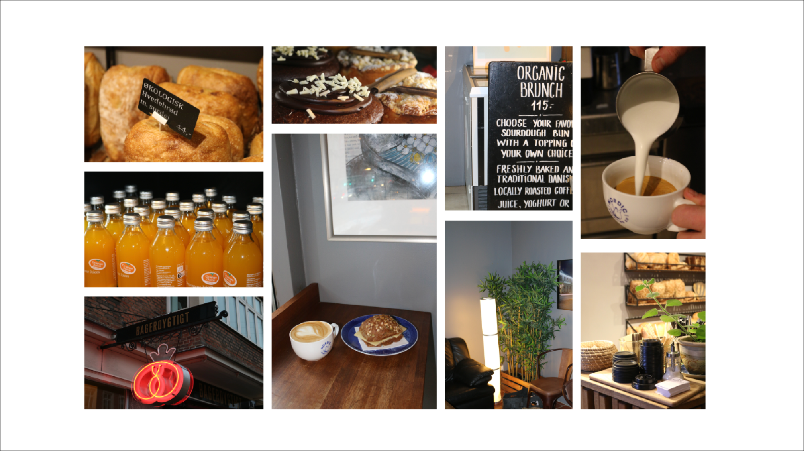
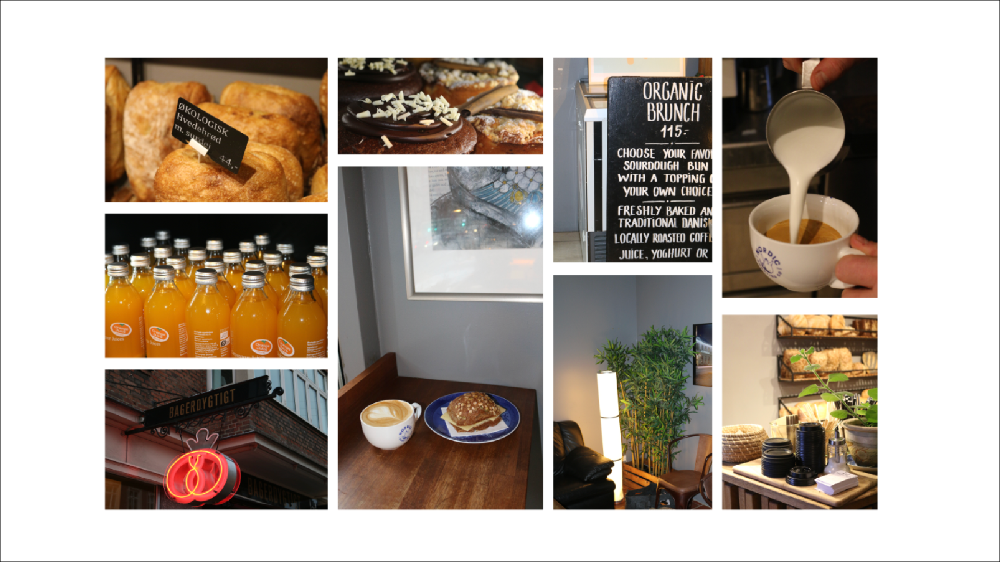

PROJEKTER
Tema 02 - Grundlæggende web
Temabeskrivelse
Dette første tema giver en grundlæggende indføring til de mest anvendte redskaber i en multimediedesigners værktøjskasse. Redskaberne udgør fundamentet for resten af din uddannelse på MMD. Du vil blive introduceret til grundlæggende faglige begreber inden for design af digitale brugergrænseflader, digital indholdsproduktion, digital kommunikation og responsivt webdesign. Du lærer at sætte websider op i html og css og får de første hands-on færdigheder inden for udarbejdelse af grafik og billedbehandling i Photoshop, opsætning af tekst og billeder i Figma.
I andet tema skabte vi bekendtskab med grundlæggende web. Indholdet var givet på forhånd, det herfra var vores opgave, at imitere de wireframes der var givet på bedste vis. Vi havde få beslutninger, som skulle træffes på egen hånd, så som farver, fonts og font-sizes. På baggrund af ovenstående, har jeg ikke valgt, at inddrage research i mit slide.
Se siden her!
Tema 03 - Grundlæggende UX
Temabeskrivelse
User Experience Design (UX) er i dag en fast bestanddel af udviklingen af digitale brugergrænseflader (UI) og disciplinens arbejdsområde, værktøjer og metoder spreder sig over uddannelsens fem fagområder. Dette tema giver dig en grundlæggende forståelse for samspillet mellem brugere og brugergrænseflader, samt hvilke teorier, værktøjer og metoder du kan benytte til research, design og test i en digital produktudvikling. Forståelse for dette samspil er vigtigt idet at designvalg og produktudvikling baseres på konkrete indsigter om reelle brugere i stedet for diffuse mavefornemmelser og umiddelbare antagelser.
På tredje tema, skulle vi udvikle en hjemmeside for en fiktiv virksomhed. Vi startede vores proces, ved at lave et mindmap, for at indsnævre virksomhedens niche. Jeg valgte, at skabe en fiktiv virksomhed, som skal udføre fitness på arbejdspladser. Altså en B2B løsning, som både skal gavne virksomheden og medarbejderen. Da jeg havde fundet min ide, udviklede jeg et spørgeskema med henblik på at undersøge om jeg havde et marked. Herfra lavede jeg et moodboard, som skulle pege mig i retning af, hvilket tema der skulle være gennemgående for mit site. Nu kunne jeg begynde at udarbejde LoFi, HiFi's og wireframes som til sidst resulterede i en prototype i figma. Da jeg havde prototypen, lavede vi brugertest for at undersøge hvor vidt, at virksomhedens egenskaber var tydelige og intuitive. Til sidst skulle siden kodes. Vi testede også sidens funktionalitet vha lighthouse test.
Se siden her!
Tema 04 - Grundlæggende animation
Temabeskrivelse
I dette tema vil du blive introduceret til programmeringssproget javascript, som kan bruges til at kode dynamiske websites. I dette tema har vi valgt, at du skal bruge javascript sammen med css animationer, til at skabe et lille spil. Dit spil skal have et koncept og en ide, som du selv finder frem til og du skal selv designe alle elementer og kode spillet helt fra bunden. På dette tema lægger vi særlig vægt på, at du begynder at arbejde professionelt med formgivning af grafiske elementer. Vi analyserer spildesign og ser på hvordan de engagerer brugerne gennem teori og konventioner inden for UI-elementer, figurelementer, baggrundsdesign og kompositionsteknikker. Du udvikler dit eget spildesign efter moderne konventioner og rentegner grafikken til spillet i Adobe Illustrator. Gennem arbejdet med dit eget spil vil du lære at arbejde med aktivitets- og statemachine- diagrammer, som bruges til at planlægge det mere komplicerede interaktive flow. Principperne fra css og javaScript, som du lærer her, vil du senere på uddannelsen kunne videreføre til at udvikle mere avancerede websites.
I fjerde tema havde vi til opgave, at udvikle et spil. I første del af processen, skulle vi udvikle vores spil-ide. Da ideen var skabt, skulle vi lave et aktivitetsdiagram over spillets gang. Herfra kunne vi begynde, at skitsere karakterer og elementer i hånden. Da håndtegningerne var lavet, tegnede jeg dem digitalt vha Illustrator, som senere kunne eksporteres og anvendes i spillet. Vi fik kendskab til JavaScript, som var det væsentligste læringsmål for temaet, og som vi brugte til at få elementerne til at bevæge sig og føre os forskellige sider, alt efter spillets udfald. Sammen med spillet, skulle vi aflevere et state-mashine-diagram.
Se siden her!
Tema 05 - Grundlæggende indhold
Temabeskrivelse
Dette tema giver dig en grundlæggende indførsel i videoproduktion, herunder præproduktion, selve optagelsen, samt postproduktion. Vi benytter smartphone kameraer til optagelse af video og ekstern lyd og Premiere Pro og Audition til redigering. Dette er væsentligt for at kunne lave mindre video/foto produktioner selv, samt for bedre at kunne kommunikere professionelt med kunder. Du vil blive introduceret til grundlæggende faglige begreber inden for video og fotoproduktion, og du benytter derudover de færdigheder, du har fået i de foregående temaer til at redesigne en virksomheds hjemmeside.
 

I femte tema, skulle vi stifte bekendtskab med optagelser, klippeværktøjer og anvende materialet på vores hjemmeside. I første del, skulle vi udvælge en person, som vi måtte filme og interviewe. Vi skulle herfra sammensætte sammensætte vores klip til en video i Premiere. Med den viden kunne vi påbegynde anden del af temaet. Vi skulle lave et re-take på en eksisterende virksomhed. Da vi havde aftalt et samarbejde med en virksomhed, påbegyndte vi vores deskresearch. Vi lavede brugertest af eksisterende site, og udviklede LoFi, HiFi, wireframes og prototype ud fra det. Derfra optog vi indhold til vores hjemmeside ude på virksomhedens adresse. Vi kunne nu starte på vores site. Da siden var færdig udførte vi selvsamme brugertest på vores re-take for at undersøge om vores re-take er mere brugervenlig. Afslutningsvis lavede lighthouse tests, for at undersøge sitets funktionalitet.
Se siden her!